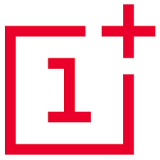

OnePlus
One Plus
About One Plus:
OnePlus Technology (Shenzhen) Co., Ltd. (一加科技), doing business as OnePlus, is a Chinese consumer electronics manufacturer headquartered in Shenzhen, Guangdong.[6] It is currently majority-owned by Oppo, its only shareholder, a subsidiary of BBK Electronics along with Vivo, Realme and iQOO.
OnePlus was founded by Pete Lau and Carl Pei on 16 December 2013 to develop a high-end flagship smartphone running CyanogenMod that would come to be known as the OnePlus One. OnePlus would continue to release phones throughout the 2010s and 2020s. In 2020, OnePlus released the OnePlus Nord, its first mid-range smartphone since the OnePlus X in 2015. Pei would oversee the design and marketing of OnePlus' products until his departure from the company in October 2020, going on to found the technology company Nothing.
Source : Wikipedia

Features of Oneplus
Cost